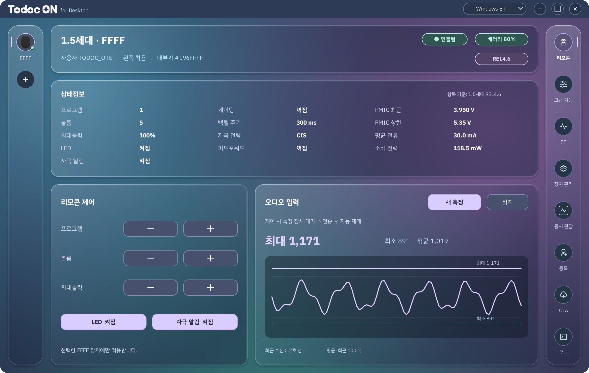
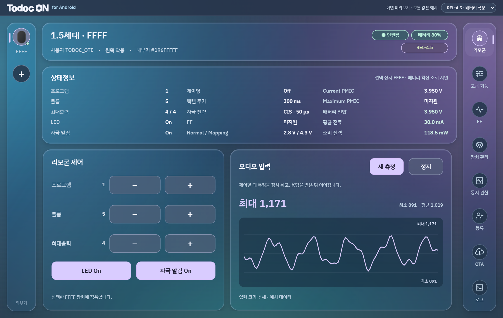
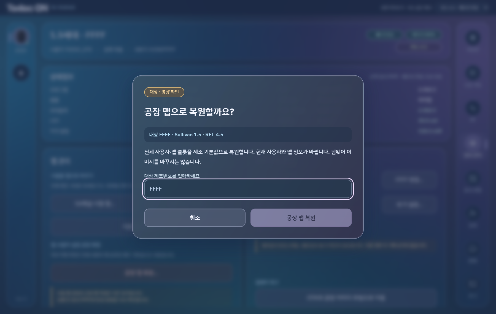
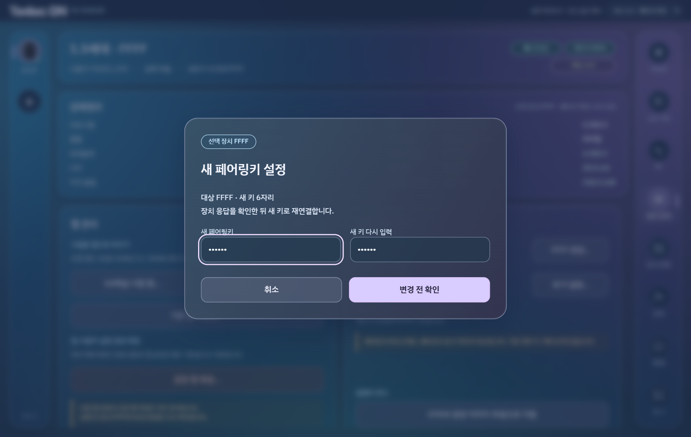
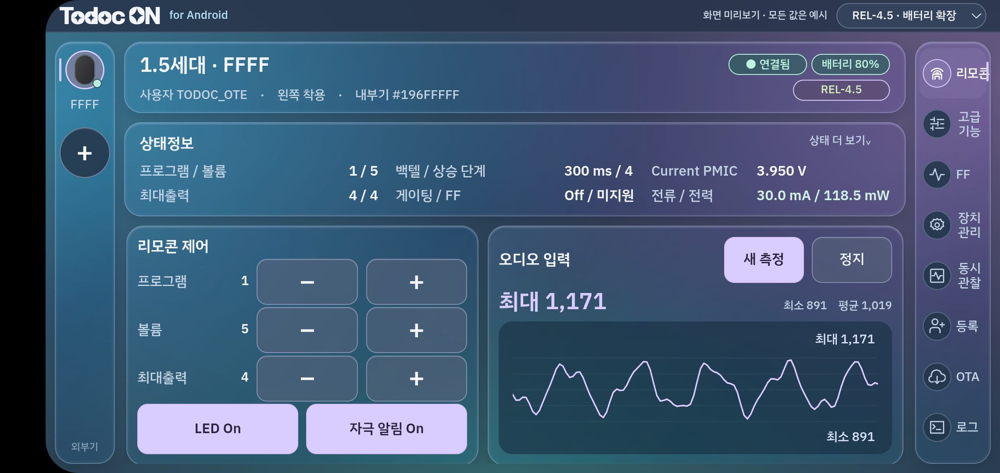

최신 방향 · 기존 세로 화면에 관리 기능 통합
기존 상태창과 네 제어 탭을 유지하고 더보기에 등록·장치 관리·로그를 모은 시안입니다. 연결된 휴대전화에 설치해 세로 화면을 확인했습니다.
최신 세로 통합 시안 열기이전 휴대전화 가로 시안
실효828×411에 맞춘 가로 안은 비교용으로 보존합니다. 아래의 원본·태블릿 분석과 프로토콜 근거도 함께 유지합니다.
이전 가로 개선안 열기이 구성을 권합니다
태블릿에서는 원본 구조를 거의 그대로 유지하고, 휴대전화 가로에서는 동일한 메뉴·카드를 유지하며 상태를 2행으로 줄입니다. 남는 제어 영역만 세로로 스크롤하고, ‘상태 더 보기’에서 모든 상태를 펼칩니다. PC 시안을 통째로 축소하면 글자와 터치 영역이 너무 작아집니다.
창 최소화·최대화·Windows BT 선택은 Android에서 제거합니다. 왼쪽 레일은 장치 전환, 오른쪽 레일은 기능 전환으로 역할을 고정합니다. 현재 선택 장치의 상태는 리모콘·고급·FF·장치 관리에서 계속 보입니다.
직접 눌러보는 미리보기
오른쪽 메뉴, 볼륨 ±, FF 설정 확인, 제조번호·키 편집, 대상 확인창을 눌러볼 수 있습니다. 모든 값과 결과는 예시이며 실제 외부기나 등록 정보에 접근하지 않습니다.
화면 모아보기
연결·리모콘·고급·FF·관리·등록·OTA·로그와 확인·오류 화면을 같은 시각 체계로 만들었습니다. 카드의 이미지를 누르면 원본 크기로 열립니다.
참고 화면과 어떤 부분을 맞췄는가


| 참고 이미지 | 유지하는 것 | Android에서 달라지는 것 |
|---|---|---|
| 01 리모콘 | 왼쪽 장치·상단 신원·상태·아래 제어/그래프 | 상태의 Normal/Mapping·최대출력 원시 레벨을 유지. 최대출력 4를 임의로 100%라고 바꾸지 않음. |
| 02 고급 기능 | 링크/통신과 전원/PMIC 2개 카드 | 기존 앱에 있는 Coin·Ctrl Mode·Nop·Normal/Mapping·Maximum을 빠뜨리지 않고 행 추가. |
| 03 FF | 상태 확인 뒤 조작하는 흐름 | Off/FF1/FF3를 구분하고 세부 조건·보정표·진단을 유지. REL4.5는 미지원 표시. |
| 04 장치 관리 | 왼쪽 맵, 오른쪽 장치 정보 | ‘구현 예정’ 대신 실제 55/56/57 명령에 대응하는 독립 동작. 공장 펌웨어 부팅은 OTA에 배치. |
| 05 동시 관찰 | 장치별 카드와 비교 그래프 | 새 다중 GATT/세션 구조가 필요. 카드만 추가한 상태를 구현 완료로 취급하지 않음. |
| 06·07 등록 | 편집/목록 좌우 분리·사용자/외부기 탭 | 앱 등록과 실제 장치 정보 변경 구분. 전화 키보드가 열리면 편집 영역 확장·목록은 접기. |
| 08 OTA | 파일 카드·대상·진행·중지 | 1.5세대 슬롯1/2와 공장 이미지 선택 유지. 다른 제품 및 다중 OTA는 연결 계층/포맷을 별도 구현. |
| 09 로그 | 시간·종류·메시지의 세 열 | Android 저장 위치 선택/공유 사용. 키와 인증 페이로드는 일반 로그에서 마스킹. |
| 10·11 연결/검색 | 빈 상태·왼쪽 +·대상 선택 | 단일 장치부터 연결. 다중 선택은 DeviceSession 분리 후 활성화. |
| 12·13 확인/오류 | 같은 유리 다이얼로그·명확한 다음 행동 | 대상 장치와 변경 영향을 표시. 쓰기 응답 유실은 ‘적용 여부 미확인’으로 처리. |
지금 재사용할 수 있는 기능과 추가할 기능
| 영역 | 현재 Android | 구현할 내용 |
|---|---|---|
| 기본·고급 제어 | 대부분 있음 | 기존 명령/상태 모델을 재사용해 화면 재배치. 잘못된 세대·의존 설정은 비활성 표시. |
| FF1 / FF3 | 있음 | Ff3Session과 설정 확인 흐름 유지. 현재 기능을 단순 On/Off로 줄이지 않음. |
| 사용자·장치 등록 | Room CRUD 있음 | 가로 편집/목록 통합. 사용자별 배정은 현재 관계 모델과 데이터 이관 여부 확인. |
| OTA / 슬롯 / 로그 | 단일 장치 기능 있음 | 파일 입력·상태·슬롯 기능 재배치. 파괴 명령에 대상 확인과 명령별 재시도 정책 적용. |
| REL4.5 전류·전력 | FW에 오늘 추가 / 앱 연동 필요 | 59 22 00 02를 시도하고 정상 20바이트 응답으로 판별. 기존 index1과 구분. |
| 제조번호·키 쓰기 | QA에 있음 / 리모콘에는 추가 | 55와56을 각각 실행. 되읽기 확인·부분 성공·키 적용 재연결·로그 마스킹. |
| 맵 공장 복원 | QA의57 절차 참고 | 시험 맵 생성 및 기본 맵 재생성과 별도 액션. 전체 4슬롯·사용자 설정 영향 설명. |
| 오디오 추세 | 상수만 있음 | 측정 요청·파서·샘플 버퍼·최소/최대/평균·그래프 및 제어 중 측정 양보. |
| 동시 관찰 | 현재 단일 GATT | 장치별 GATT·큐·타임아웃·상태·FF·OTA를 분리한 DeviceSession 선행. |
‘초기화’라는 한 단어로 묶지 않겠습니다
| 화면 이름 | 명령 | 실제 범위 | 성공 판단 |
|---|---|---|---|
| 시험용 맵 만들기 | 59 21 01 01 10/20 | MRI 16/32채널 맵 파일 생성. 기존 맵을 덮어씀. | 응답은 수락이며 작업 완료 아님. 진행 뒤 상태 재조회. |
| 기본 맵 재생성 | 59 21 01 01 FF | 펌웨어 기본 맵 파일로 재생성. | 수락과 완료를 구분. 기존 앱의 Map rollback 명칭을 구체화. |
| 맵·사용자 설정 공장 복원 | 57 | 내부기 슬롯1~4 정보·사용자 설정·맵 데이터를 제조 기본값으로 복원. | 57 01 뒤 재조회. 과거 개인 맵 백업 복구가 아님. |
| 공장 펌웨어로 부팅 | C2 02 FF | 공장 이미지로 부팅하도록 저장한 뒤 재부팅. | 수락 응답 → 연결 종료 → 재연결/부팅 상태 확인. |
참고로 기존 앱의 HEADER_MAP_RESET_DEFAULT=0x50은 이 펌웨어에서 슬롯1을 제외한 맵 삭제입니다. 이름만 보고 공장 복원에 연결하면 안 됩니다.


REL4.5 배터리는 버전만으로 판단하지 않습니다
새 REL4.5는 기존 index0/1의 13바이트 응답을 유지하며 index2에만 20바이트 응답을 추가합니다. 버전 번호가 같은 이전 장치도 있으므로 연결마다 실제 응답으로 기능을 확인해야 합니다.
59 22 00 02 요청. 정상20바이트 응답이면 전류·전력 사용.PMIC는 기존 전용 조회를 유지합니다. 배터리 전압·전류의 원시값으로 전력을 계산하고, 무효 샘플은 — 또는 상태 설명으로 표시합니다. 실패한 전류를 정상 0.0 mA로 바꾸지 않습니다.
구현 순서 제안
글래스는 같은 배경 한 장을 공유하도록 구현합니다. 정적인 배경은 미리 흐린 레이어와 반투명 표면으로 구현해 구형 Android에서도 모양을 맞추고, 패널마다 배경을 새로 그려 색이 끊기는 문제를 피합니다. 실제 앱은 네이티브 뷰와 장치 세션에 연결하며, 이번 HTML/WebView는 배치와 색을 검토하는 용도입니다.
실제 기기에서 확인한 범위
연결된 Android 기기의 가로 debug 미리보기에 설치해 표시를 검사했습니다. 기본 앱의 진입점·등록 DB·BLE 제어 화면은 유지되며 미리보기는 별도 Activity입니다. 수치·연결 배지는 예시입니다.

소스 근거와 검증 범위
UI 원본: docs/참고/TodocON_Android_UI_Reference.zip의 전체 PNG 및 README. 현재 Android: MainActivity / RemoteControlFragment / StatusViewModel / Ota / Ff3Session. 펌웨어: sullivan-1-5-fw-rel-4-5의 remoteControl_protocol.c, remoteControl_stim_ctrl.c, remoteControl.c, ci_ble_control_boot.c, nRF ble_transfer.c 및 product_info.c. QA: QATabletActivity.kt.
태블릿1200×760과 휴대전화868×411에서 가로 넘침·폰트 로드·메뉴/볼륨/FF 확인·대상 번호 확인 동작을 점검했습니다. 네이티브 실제 BLE 기능은 이번 미리보기에서 전송하지 않았습니다. 상세 검사: 렌더 검사 JSON, 작업 기록.